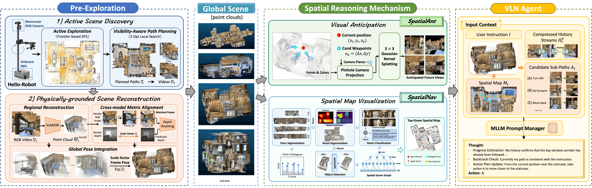

Spatial-X: Zero-Shot Vision-and-Language Navigation with Global Scene Priors
Qualitative Examples
FOR EACH VIDEO -- Left: Real Observation | Middle: Spatially Anticipated Future | Right: Top-Down Spatial MapWe are glad to introduce our series of works on zero-shot Vision-and-Language Navigation (VLN) using global scene priors. We are the first to close-loop the pre-exploration to physically grounded 3D scene reconstructions (i.e. point clouds) for VLN agents and investigate how pre-explored 3D scene priors can provide a robust reasoning basis in multiple ways.

By integrating these components, our approach allows for robust zero-shot vision-and-language navigation in complex environments.
| # | Methods | Pre-Exp | R2R-CE | RxR-CE | |||||||
|---|---|---|---|---|---|---|---|---|---|---|---|
| NE(↓) | OSR(↑) | SR(↑) | SPL(↑) | nDTW(↑) | NE(↓) | SR(↑) | SPL(↑) | nDTW(↑) | |||
| Supervised Learning: | |||||||||||
| 1 | NavFoM | -- | 4.61 | 72.1 | 61.7 | 55.3 | -- | 4.74 | 64.4 | 56.2 | 65.8 |
| 2 | Efficient-VLN | -- | 4.18 | 73.7 | 64.2 | 55.9 | -- | 3.88 | 67.0 | 54.3 | 68.4 |
| Zero-Shot: | |||||||||||
| 3 | Open-Nav | ✕ | 6.70 | 23.0 | 19.0 | 16.1 | 45.8 | -- | -- | -- | -- |
| 4 | Smartway | ✕ | 7.01 | 51.0 | 29.0 | 22.5 | -- | -- | -- | -- | -- |
| 5 | STRIDER | ✕ | 6.91 | 39.0 | 35.0 | 30.3 | 51.8 | 11.19 | 21.2 | 9.6 | 30.1 |
| 6 | VLN-Zero | ✓ | 5.97 | 51.6 | 42.4 | 26.3 | -- | 9.13 | 30.8 | 19.0 | -- |
| 7 | SpatialNav (Ours) | ✓ | 5.15 | 66.0 | 64.0 | 51.1 | 65.4 | 7.64 | 32.4 | 24.6 | 55.0 |
| 8 | SpatialAnt (Ours) | ✓ | 4.42 | 76.0 | 66.0 | 54.4 | 69.5 | 5.28 | 50.8 | 35.6 | 65.4 |
@article{zhang2026spatialnav,
title={SpatialNav: Leveraging Spatial Scene Graphs for Zero-Shot Vision-and-Language Navigation},
author={Zhang, Jiwen and Li, Zejun and Wang, Siyuan and Shi, Xiangyu and Wei, Zhongyu and Wu, Qi},
journal={arXiv preprint arXiv:2601.06806},
year={2026}
}
@article{zhang2026spatialant,
title={SpatialAnt: Autonomous Zero-Shot Robot Navigation via Active Scene Reconstruction and Visual Anticipation},
author={Zhang, Jiwen and Shi, Xiangyu and Wang, Siyuan and Li, Zerui and Wei, Zhongyu and Wu, Qi},
year={2026}
}